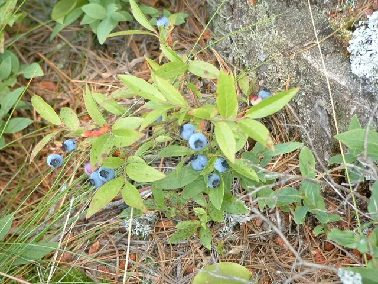

Breads & baking · Popular in Atlantic Canada and Quebec
Wild blueberry muffins
Wild blueberry muffins is made with wild blueberry, a favourite in Atlantic Canada and Quebec.

How do you make wild blueberry muffins?
Muffins packed with small wild blueberries.
Wild ingredients
- Wild blueberry (Vaccinium angustifolium): in season July to August
Watch the recipe

Video: Preppy Kitchen on YouTube